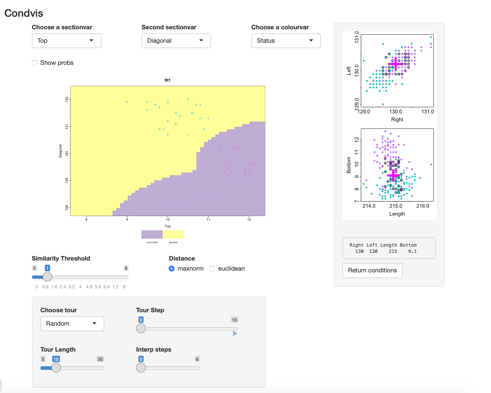
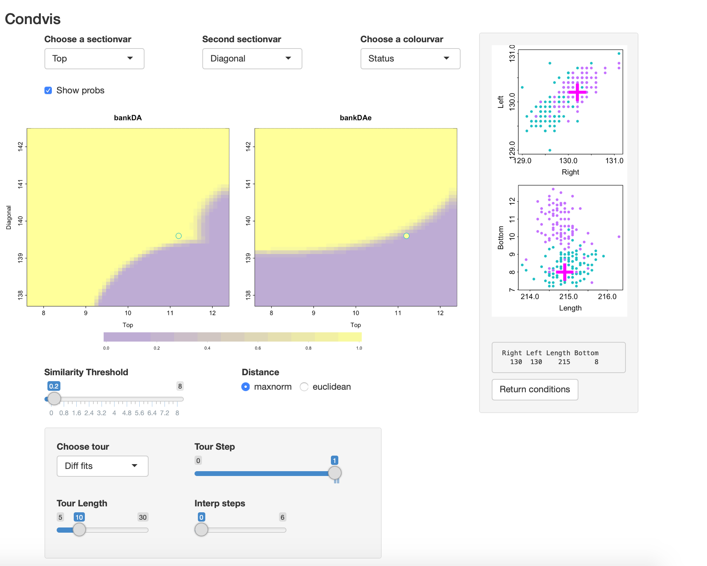
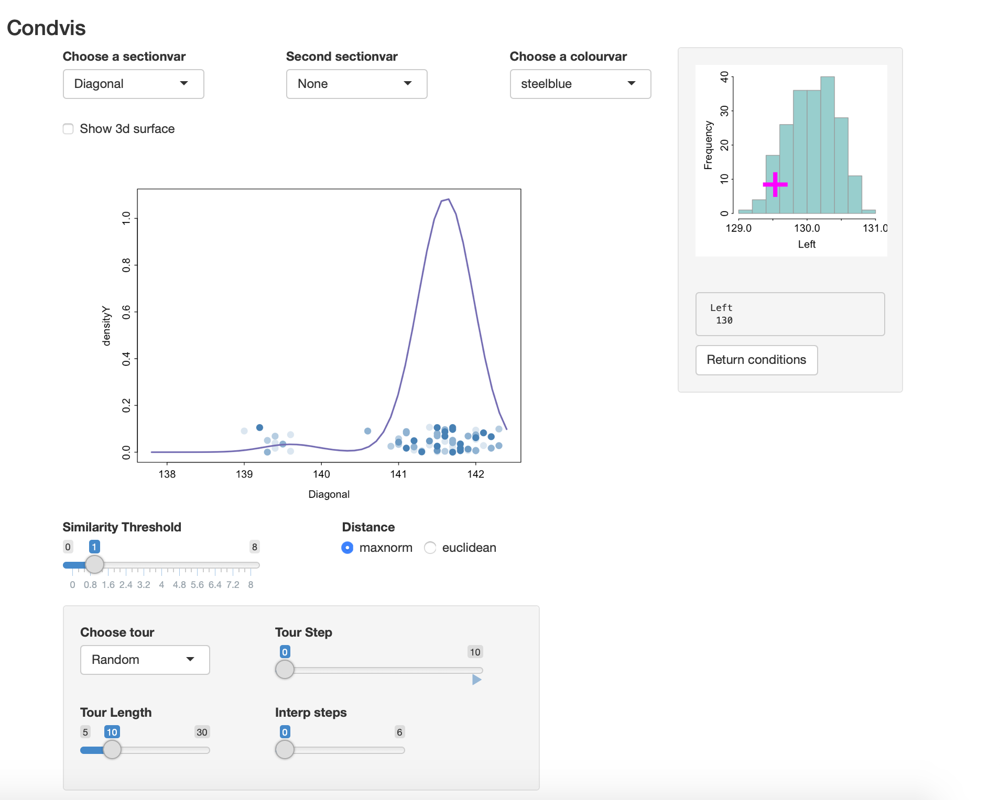
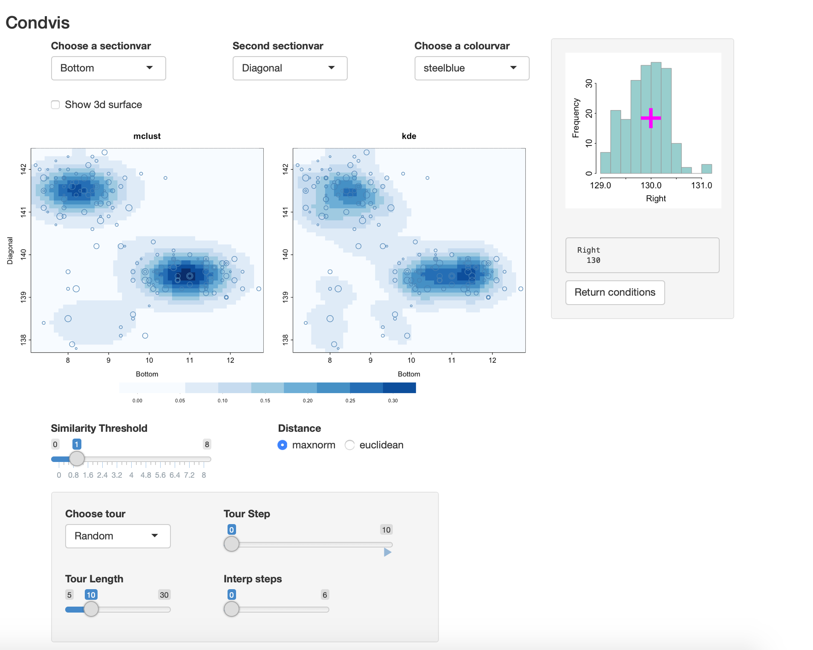

vignettes/mclust.Rmd
mclust.Rmdmclust is a R package that offers - model-based clustering: Mclust - classification ( discriminant analysis): MclustDA - density estimation densityMclust all based on mixtures of Normals.
condvis2 offers an interface to all of these.
We start with
library(condvis2)
#> Registered S3 method overwritten by 'seriation':
#> method from
#> reorder.hclust gclus
library(mclust)
#> Package 'mclust' version 5.4.7
#> Type 'citation("mclust")' for citing this R package in publications.This fits an XXX=ellipsoidal multivariate normal for the genuine notes and EVE2 = ellipsoidal, equal volume and equal shape with two components for counterfeits.
Condvis uses a generic CVpredict to provide a uniform interface to predict methods. We will use it to find the number of misclassifications:
table(banknote$Status, CVpredict(bankDA, banknote))
#>
#> counterfeit genuine
#> counterfeit 100 0
#> genuine 0 100
svars <- c("Top", "Diagonal")
cvars <- setdiff(names(banknote)[-1], svars)
condvis(data = banknote, model = bankDA,
response="Status", sectionvars=svars,conditionvars=cvars,
pointColor="Status", showsim=TRUE
)The showsim=TRUE setting means that the condition plots will mark points considered sufficiently near the section with a dark outline. This is the default setting only when \(n <= 150\). In the condition plots, the green points are the genuine ones, pink are counterfeit.
Here is a views of the result:
 There is one point that appears to be mis-classified (though it is not). However, as it’s size is small it is not very close to the selected section.
Selecting Show probs: we see there is some uncertainty about the classification on the classification boundaries.
A different, simpler fit is got using
bankDAe <- MclustDA(banknote[,-1], banknote[,1], modelType="EDDA",verbose=F)This uses an EVE1 for each class, and there is one mis-classification, at case 70.
We can use condvis to compare the two fits:
condvis(data = banknote, model = list(bankDA=bankDA, bankDAe=bankDAe),
response="Status", sectionvars=svars,conditionvars=cvars,
pointColor="Status", showsim=T
)If you go to Tour, Diff fits, you can move through views where the conditioning points are those where the fits disagree. In this case there is only one such point. Here Show probs is selected so there is some uncertainty visible at the classification boundaries.
The screenshot shows that in this view. 
The mis-classified point is a genuine note (green) which is just inside the region classified as counterfeit by EDDA. Here also the Similarity threshold is made small so only the point on the section is visible in the section plot. From the condition plots it is evident this note has a low Diagonal size, like the counterfeits.
First calculate a density estimate of two variables.
data(banknote)
dens2 <- densityMclust(banknote[,c("Diagonal","Left")],verbose=F)
summary(dens2)
#> -------------------------------------------------------
#> Density estimation via Gaussian finite mixture modeling
#> -------------------------------------------------------
#>
#> Mclust EEI (diagonal, equal volume and shape) model with 4 components:
#>
#> log-likelihood n df BIC ICL
#> -289.6722 200 13 -648.2225 -664.0955We can visualise the density as a surface or contour plot. Alternatively, we can use condvis to show the conditional density, fixing one of the variables.
condvis(data = banknote, model = dens2, response=NULL,
sectionvars="Diagonal",conditionvars="Left",
density=T, showdata=T)The density of Diagonal varies with the Left value. Click on left to check this. 
Estimating the density of three variables:
dens3 <- densityMclust(banknote[,c("Right", "Bottom", "Diagonal")],verbose=F)
summary(dens3)
#> -------------------------------------------------------
#> Density estimation via Gaussian finite mixture modeling
#> -------------------------------------------------------
#>
#> Mclust EEI (diagonal, equal volume and shape) model with 4 components:
#>
#> log-likelihood n df BIC ICL
#> -544.611 200 18 -1184.592 -1197.047By way of comparison, here is the kernel density estimate to compare with mclust:
condvis(data = banknote, model = list(mclust=dens3, kde=kdens3), response=NULL,
sectionvars=c("Bottom", "Diagonal"),conditionvars="Right",
density=T, showdata=T)As you vary the level of Right, both densities look quite similar.

Click on “Show 3d surface” to get a wireframe plot.
bankC <- Mclust(banknote[,-1],verbose=F) # picks 3 clusters
banknote1 <- banknote
banknote1$cluster <- factor(CVpredict(bankC, banknote))
svars <- c("Top", "Diagonal")
cvars <- c("Left", "Right" , "Bottom")
condvis(data = banknote1, model = bankC,
response="cluster", sectionvars=svars,conditionvars=cvars,
pointColor="Status", showsim=TRUE
)